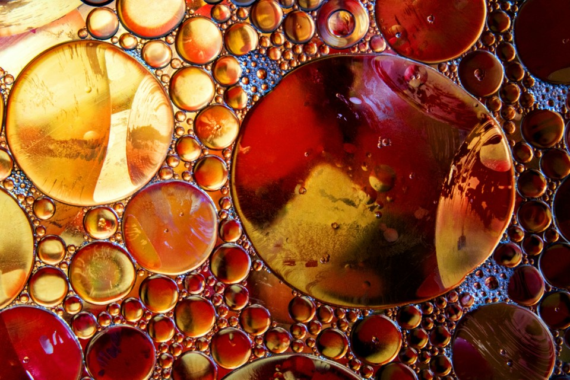

Data Portolio | Project 1
Predicting Solubility with a Recurrent Neural Network
log(P) is a measure of the partition of small organic molecules between lipophilic and hydrophilic phases and is commonly used as a metric for lipophilicity in medicinal chemistry. This can help researchers make heuristic judgements of the bioavailability of a medicine in the body.
This project makes use of the ability of a long-short term memory recurrent neural network (LSTM RNN) to incorporate long and short range interactions in the input vector to predict the log(P) from tokenised molecular structures. Bayesian Optimisation is used to optimise all of the model's hyperparameters simultaneously.
1 | Dataset and Preprocessing
This project uses a dataset of calculated log(P) values, sourced from Kaggle. Ideally, the model would be based on experimentally measured values, as any error in the calculations would affect the accuracy of the network. The model architecture and training loop would be the same in either case, however, so the calculated values are fine for this toy project.
The dataset associates SMILES strings, encoding molecular structure, with the calculated log(P) values, Clog(P). In order to convert the SMILES strings to a representation that could be _ by the model, I used the SMILESTokenizer function from the pysmilesutils library to tokenise the string type SMILES data into a vector with each value representing an encoded structural feature. ***PADDING*** Attempting to train the model with the data formatted in this manner initially gave poor results, which were due to a small number of tokenised molecular structures being notably longer than the majority.
This was solved by simply introducing a cut-off for the maximum length of tokenised molecular structure. The model is therefore only suitable for smaller molecules, but without a larger corpus of data on larger molecules, the inclusion of the available data does not result in better predictive performance on either small or larger molecules. A threshold of 20 for the maximum length was chosen, reducing the dataset size from 14610 entries to 13288 (~9% reduction in size). With this slightly reduced dataset, the data could then be split into a training (90%) and test (10%) dataset and the model trained to reach an acceptable accuracy for my purposes.
2 | Model Architecture and Training Loop
The model is written using PyTorch.
3 | Scoring
Text Text Text Text Text Text Text Text Text Text Text Text
4 | Bayesian Optimisation of Hyperparameters
Text Text Text Text Text Text Text Text Text Text Text Text
5 | Optimised Model
Text Text Text Text Text Text Text Text Text Text Text Text